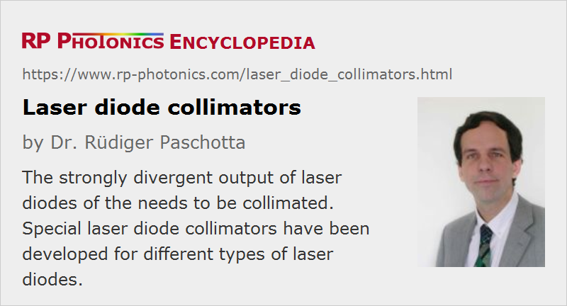

Laser Diode Collimators
Definition: devices for collimating the output of laser diodes
German: Kollimatoren für Laserdioden
Categories: general optics, lasers
How to cite the article; suggest additional literature
Author: Dr. Rüdiger Paschotta
Laser diodes usually emit strongly diverging light, essentially because the meeting areas are normally quite small. For many applications, it is necessary to first transform the radiation into a collimated beam, using some kind of beam collimator. Because the emission properties of different types of laser diodes can be quite different, different types of laser diode collimators have been developed and are described in the following section.
For most laser diodes, the beam divergence is so substantial that it is advantageous to use aspheric lenses for beam collimation in order to avoid significant spherical aberrations of the collimated beam. (For good performance, the numerical aperture of the lens should be significantly larger than that of the laser diode – for example, by a factor of two.) On the other hand, the emission bandwidth is usually quite small, so that achromatic optics are not required in most cases.
Collimators for Single-emitter Laser Diodes
Most available laser diode collimators are designed for use with low-power single-emitter edge-emitting laser diodes. For example, such devices are required in laser pointers.
We first consider only one direction of the emission (horizontal or vertical). The distance between the laser diode output facet and the collimation lens needs to be identical to the focal length of the lens, because otherwise the beam after the lens would be convergent or divergent. It is then simple in principle to calculate the beam diameter after the lens for one of the directions: it is the full divergence angle times the focal length. However, the output beam divergence of laser diodes is often specified in terms of a full width at half maximum (FWHM), whereas for collimated laser beams one usually specifies the 1/e2 beam radius or diameter. Typically, the latter is larger by a factor of ≈1.7, which however somewhat depends on the shape of the intensity profile.
Single-emitter laser diodes usually exhibit substantially different divergence in two orthogonal directions. In typical cases, one has about 10° divergence (full width at half maximum) in the “slow” direction and ≈30° in the “fast” direction. On the other hand, the focus positions are often very close together (very small astigmatism) at least for so-called index-guided laser diodes, so that an ordinary lens (not a cylindrical one) placed at an appropriate distance to the laser diode output can simultaneously collimate light in both directions. Only, the beam radius in the two directions will be substantially different; it may for example be about three times larger in the “fast” direction.
In many cases, it is required to transform the beam profile into a circular one; this is often accomplished by applying an anamorphic prism pair, which may either be used separately or integrated into a laser diode collimator device. Alternatively, one may use two cylindrical lenses, each one having a focal length which is appropriate for obtaining the desired beam radius in its direction. Another technical option is a cylindrical microlens mounted with high precision close to the laser diode facet for transforming the beam into a circular one.
For gain-guided laser diodes (typically those with higher output powers), there is the additional problem of astigmatism: the focus positions for the two directions do not exactly coincide. Although their distance is small compared with the length of the laser diode chip, it is substantial when comparing with the Rayleigh length. A consequence of that is that slightly different lens positions (distances to the output facet of the laser diode) would be required for perfect collimation in the two directions. Although an anamorphic prism pair can still be used for producing and approximately circular beam, the astigmatism cannot be corrected that way. A pair of cylindrical lenses, which can be independently adjusted, can be a good solution.
Strictly speaking, the used cylindrical lenses often have acylindrical surfaces, i.e., some deviations from the cylindrical shape such as to minimize aberrations (see the article on aspheric optics).
For the typically moderate output powers, plastic optics are usually sufficient, particularly when a high optical performance is not required. However, glass lenses with higher quality are also often used. For particularly short focal lengths, one often uses ball lenses or half-ball lenses.
For certain applications, one uses only a cylindrical lens, which collimators the output beam only in one direction. Such devices are sometimes called line generators.
Collimators for Broad-area Emitters, Diode Bars and Diode Stacks
The emitting region of a broad-area laser diode is much larger in the direction along the wafer surface (often called the horizontal direction) than in the other one; this kind of laser design is chosen to obtain substantially higher output powers. The beam divergence in that “slow” direction is significantly smaller than in the fast direction, but by far not as small as it would be for a diffraction-limited beam: the emission is highly multimode in that direction. Therefore, the beam quality in that direction is far worse. A consequence of that is that while the beam diameter after a simple collimation lens is significantly smaller in the “slow” direction, the residual beam divergence in that direction is much larger.
Some broad-area emitters are sold with a fast axis collimation lens (FAC lens) fixed to the output facet. This collimates the output only in that direction, so that it is no more necessary to mount additional optical parts very close to the diode. The same technique can be applied to diode bars, e.g. packages containing multiple broad emitters in an array. A single cylindrical (or in fact slightly acylindrical) fast axis collimation lens (sometimes called a fiber lens) may be sufficient for all emitters. Problems can occur when such an emitter array exhibits a too large “smile”.
For diode stacks, one often uses an array of cylindrical microlenses, each one working for one of the contained bars. In a larger distance, one may have a single cylindrical lens for collimating the beam in the slow direction.
Collimators for VCSELs and VCSEL Arrays
It is relatively easy to collimate the output of a vertical cavity surface-emitting laser (VCSEL), since the output beam is usually circular and exhibits a quite moderate beam divergence. A simple spherical lens with moderate numerical aperture is normally sufficient for that purpose. If the desired beam radius is relatively small, a microlens may be employed.
For collimating the output of VCSEL arrays, containing many VCSELs in a 2D pattern, one may use microlens arrays.
Mechanical Aspects
Laser diode beam collimators do not only consist of optical elements, but also contain mechanical parts for fixing the position of the collimation lens and any other optics, and also the laser diode. Often, they are made such that laser diodes with a certain housing (e.g., TO can for low-power emitters) can conveniently be fixed to the collimator, e.g. using a threaded retaining ring. Subsequently, the collimator often needs to be attached to other parts, e.g. a kinematic mount.
Some laser diode collimators are adjustable, e.g. such that by rotating a cap (possibly equipped with a scale) one can fine-adjust the focus via the distance between laser diode facet and collimation lens.
A high mechanical stability can be important, for example because significant beam pointing fluctuations may result from temperature changes.
Suppliers
The RP Photonics Buyer's Guide contains 17 suppliers for laser diode collimators. Among them:
Questions and Comments from Users
Here you can submit questions and comments. As far as they get accepted by the author, they will appear above this paragraph together with the author’s answer. The author will decide on acceptance based on certain criteria. Essentially, the issue must be of sufficiently broad interest.
Please do not enter personal data here; we would otherwise delete it soon. (See also our privacy declaration.) If you wish to receive personal feedback or consultancy from the author, please contact him e.g. via e-mail.
By submitting the information, you give your consent to the potential publication of your inputs on our website according to our rules. (If you later retract your consent, we will delete those inputs.) As your inputs are first reviewed by the author, they may be published with some delay.
See also: beam collimators, collimated beams, laser diodes
and other articles in the categories general optics, lasers
|  |
If you like this page, please share the link with your friends and colleagues, e.g. via social media:
These sharing buttons are implemented in a privacy-friendly way!